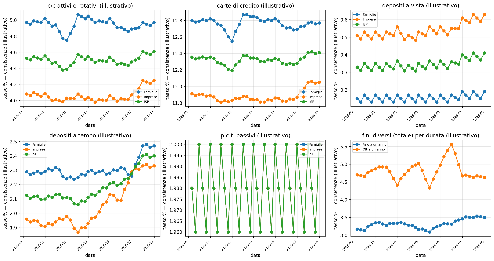
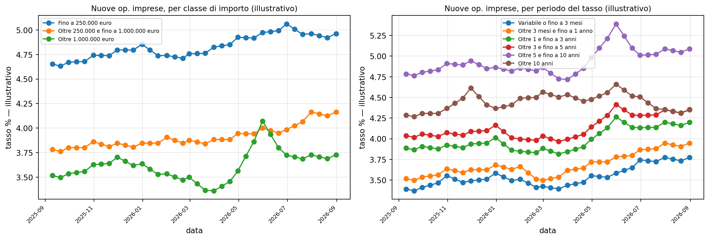
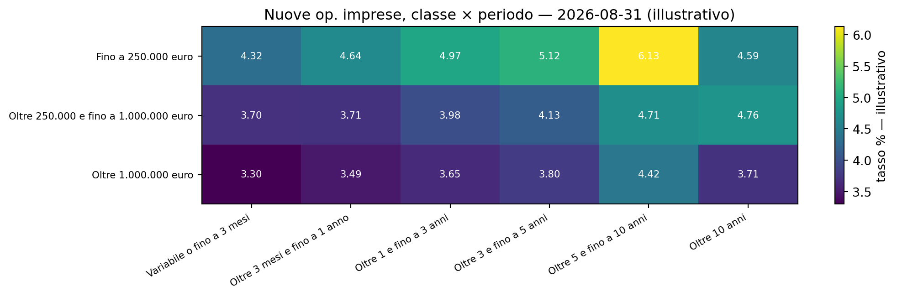
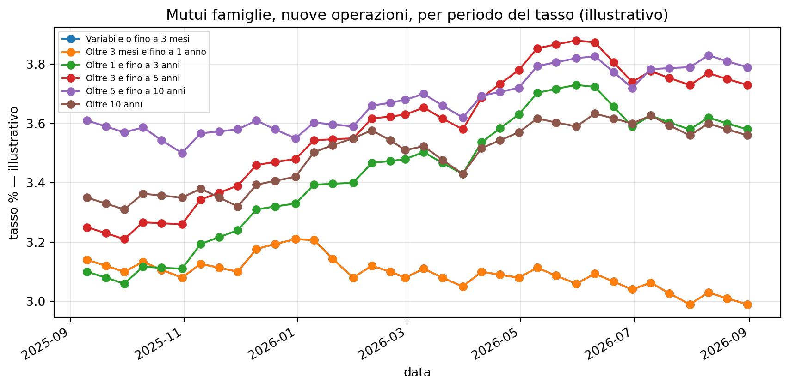
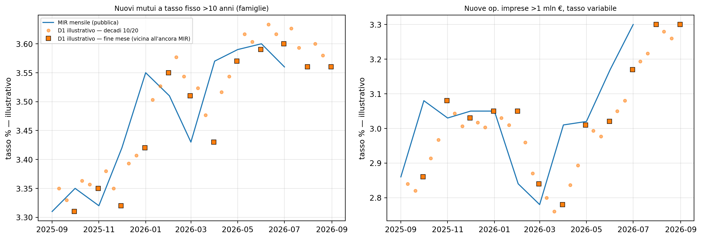
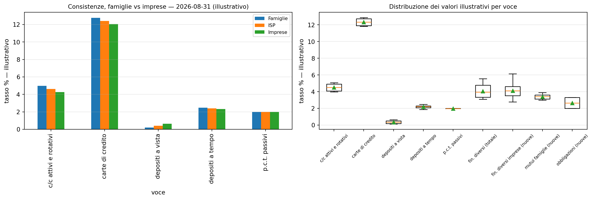
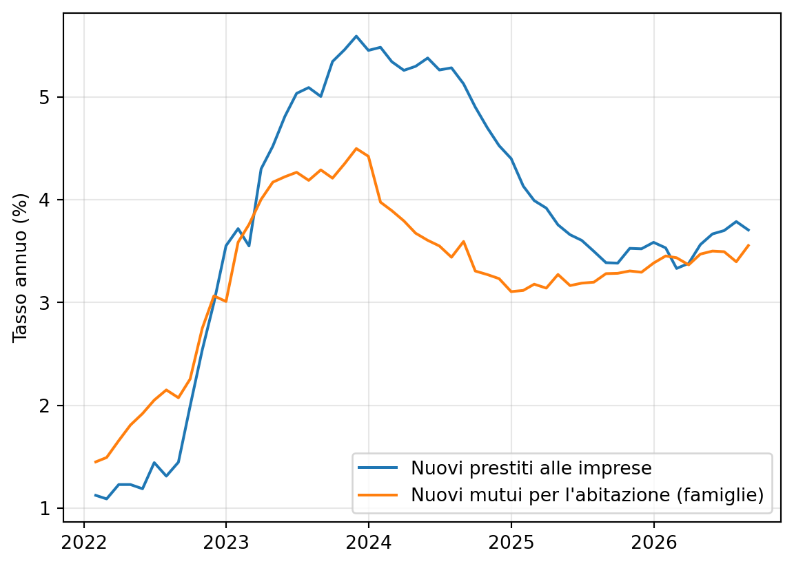
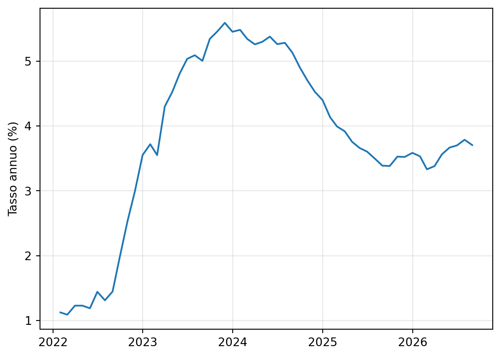

| periodo di determinazione del tasso | Variabile o fino a 3 mesi | Oltre 3 mesi e fino a 1 anno | Oltre 1 e fino a 3 anni | Oltre 3 e fino a 5 anni | Oltre 5 e fino a 10 anni | Oltre 10 anni |
|---|---|---|---|---|---|---|
| classe di importo | ||||||
| Fino a 250.000 euro | 4.32 | 4.64 | 4.97 | 5.12 | 6.13 | 4.59 |
| Oltre 250.000 e fino a 1.000.000 euro | 3.70 | 3.71 | 3.98 | 4.13 | 4.71 | 4.76 |
| Oltre 1.000.000 euro | 3.30 | 3.49 | 3.65 | 3.80 | 4.42 | 3.71 |
Tassi bancari a cadenza decadale
L’infrastruttura statistica infra-mensile di Banca d’Italia e il confronto con la rilevazione armonizzata europea
Banche e credito
Dati e metodo
Che cosa sono le segnalazioni decadali dei tassi bancari, come sono costruite e come si confrontano con la rilevazione mensile armonizzata della BCE (MIR); con una griglia illustrativa a valori simulati.
Paolo Volterra ![]()
Sommario
Le statistiche pubbliche sui tassi di interesse bancari italiani hanno cadenza mensile. Meno nota è l’esistenza, all’interno del sistema di segnalazioni statistiche e di vigilanza di Banca d’Italia, di una rilevazione infra-mensile a cadenza decadale (tre date contabili al mese) sui principali tassi attivi e passivi applicati dalle banche. Questo documento ne descrive la natura e la collocazione nel sistema segnaletico nazionale, e la confronta con la rilevazione armonizzata mensile della Banca Centrale Europea sui tassi di interesse delle istituzioni finanziarie monetarie, individuando per quale uso la maggiore frequenza della rilevazione decadale sia effettivamente rilevante e per quale, al contrario, la statistica mensile resti l’unica fonte disponibile.
Parole chiave
tassi di interesse, banche, segnalazioni statistiche, Banca d’Italia, PUMA, MIR, BCE
Versione citabile su Zenodo, con il PDF: doi.org/10.5281/zenodo.22842836.
1 Introduzione
Gli intermediari creditizi e finanziari italiani trasmettono a Banca d’Italia un insieme ampio di segnalazioni statistiche e di vigilanza, che alimentano sia i controlli prudenziali sia le statistiche ufficiali diffuse al pubblico. La cadenza con cui queste informazioni vengono raccolte non è uniforme: accanto alle rilevazioni mensili e trimestrali, che sono anche quelle alla base delle statistiche pubblicate, esiste una rilevazione decadale — tre date contabili al mese — dedicata ai tassi di interesse bancari e ad alcuni aggregati di intermediazione con la clientela, alla quale partecipa un campione rappresentativo di enti creditizi.
Questa rilevazione decadale è meno conosciuta delle statistiche mensili perché non è concepita come uno strumento di diffusione pubblica, ma come un meccanismo di controllo e di restituzione alle banche partecipanti di aggregati e tassi medi del campione. Il documento ne descrive la struttura generale e la colloca rispetto alla rilevazione armonizzata mensile della Banca Centrale Europea, che resta invece la fonte pubblica di riferimento per l’andamento dei tassi bancari italiani.
2 La rilevazione decadale nel sistema segnaletico di Banca d’Italia
La rilevazione decadale dei tassi bancari è disciplinata dalla Circolare n. 136 dell’8 gennaio 1991 della Banca d’Italia, che ne fissa i criteri e gli schemi segnaletici [1]. Vi partecipa un campione di enti creditizi rappresentativo dell’intero sistema, che trasmette a Banca d’Italia, con cadenza decadale, valori assoluti di consistenze e tassi di interesse su consistenze e flussi [2]. Il quadro più generale delle segnalazioni statistiche e di vigilanza resta definito dalla Circolare n. 154 del 1991, che descrive lo schema della cosiddetta Matrice dei conti e le variabili di classificazione comuni alle basi informative, quali la valuta dell’operazione, la durata e la residenza della controparte [3]; il contenuto analitico delle singole basi informative — cubi, variabili e codifiche — è raccolto nella documentazione tecnica condivisa tra Banca d’Italia e intermediari nota come PUMA (Procedura Unificata Matrici Aziendali) [4]. È in questo vocabolario che la base dedicata ai tassi è identificata come D1 e denominata «decadali» [4]. La sua cadenza è di tre date contabili al mese: una frequenza superiore a quella di qualunque rilevazione sui tassi bancari diffusa al pubblico per il sistema italiano.
Le banche del campione trasmettono i propri dati e ricevono a loro volta un flusso di ritorno — il FRIDE (Flusso di Ritorno delle segnalazioni Decadali) — che contiene aggregati del campione e tassi medi ponderati riferiti all’intero campione, oltre ai valori assoluti di consistenza aggregati per campione [2]. Il flusso copre le principali forme tecniche del rapporto banca-cliente:
- conti correnti attivi e prestiti rotativi,
- utilizzi di carte di credito,
- finanziamenti diversi da questi ultimi disaggregati
- per fascia di importo e
- per periodo di determinazione del tasso,
- mutui per l’acquisto dell’abitazione,
- depositi a vista e depositi a tempo,
- pronti contro termine e
- obbligazioni emesse.
Per ciascuna di queste voci la rilevazione distingue i tassi calcolati sulle consistenze di fine periodo da quelli calcolati sulle nuove operazioni effettuate nel periodo, e separa la clientela famiglie da quella delle imprese non finanziarie (SNF).
La base decadale si articola in quarantadue cubi, dei quali dodici sono esplicitamente dedicati ai tassi di interesse, mentre i restanti riguardano gli importi in valore delle operazioni e le altre voci della base [4].
I dodici cubi-tasso combinano tre dimensioni:
- la forma tecnica (conti correnti attivi e prestiti rotativi, utilizzi di carte di credito, altri finanziamenti, mutui per l’acquisto dell’abitazione, depositi a vista e altri depositi, pronti contro termine, obbligazioni emesse);
- il tipo di operazione (consistenze di fine periodo oppure nuove operazioni del periodo); e,
- per i finanziamenti, la classe di importo e il periodo di determinazione del tasso.
La base tecnica include inoltre un indicatore distributivo — il primo decile della distribuzione degli impieghi — che però, secondo la documentazione del flusso di ritorno, non viene restituito alle banche [2]. Una particolarità riguarda le obbligazioni emesse, per le quali la rilevazione resta mensile anche all’interno della base decadale: è l’unica voce per cui la cadenza non è decadale [4].
La finalità dichiarata della rilevazione, tuttavia, non è la diffusione pubblica ma il controllo di qualità dei dati e la restituzione di un riscontro tempestivo alle banche segnalanti: la cadenza decadale serve a intercettare rapidamente anomalie nella segnalazione, non a costituire una serie storica pubblicabile. Le forme tecniche e le categorie di controparte sono in parte analoghe a quelle della reportistica mensile sui tassi bancari — la stessa distinzione tra consistenze di fine periodo e nuove operazioni, la stessa separazione tra famiglie e imprese non finanziarie — ma poggiano su una base giuridica e su una popolazione di riferimento proprie, distinte da quelle della rilevazione armonizzata europea descritta nella sezione seguente.
3 Il tracciato: record a posizione fissa
Il flusso di ritorno non arriva come un file tabellare nel senso consueto. È un file di testo composto da una sequenza di record di lunghezza fissa, ciascuno una stringa di caratteri senza separatori: non ci sono virgole, tabulazioni o altri delimitatori a distinguere un campo dall’altro. La struttura — il «tracciato record» — è definita nella documentazione tecnica del flusso [2], e ogni campo si individua in due modi: per la posizione che occupa entro il record e per il numero di caratteri a esso assegnati, e per il codice che vi è scritto, da interpretare con le tabelle del vocabolario PUMA e della Circolare n. 154 [3], [4]. È il formato tipico delle segnalazioni del sistema segnaletico, dove i campi sono definiti da un tracciato a lunghezza fissa comune a tutte le basi informative [3].
Il record del flusso comprende, nell’ordine, un numero progressivo, la data contabile della decade, la natura del dato (tasso, consistenza o importo), il codice del segnalante, il codice del fenomeno, e poi le variabili di classificazione — divisa, durata dell’operazione, residenza e settore della controparte, periodo di determinazione del tasso, classe di importo. Chiude il record il campo del valore: una stringa di cifre in cui i decimali non sono materialmente presenti ma sono stabiliti una volta per tutte dalla documentazione, come interi con un numero fisso di decimali impliciti. Ne segue che il file è leggibile solo conoscendo il tracciato: prese da sole le posizioni non significano nulla, e uno scostamento di un solo carattere nei confini dei campi rende il contenuto incomprensibile. È l’errore tipico di chi prova a decodificare il file per tentativi, senza il tracciato ufficiale.
| Campo | Natura |
|---|---|
| numero progressivo | contatore del record |
| data contabile | la decade di riferimento, in formato anno-mese-giorno |
| natura del dato | distingue tasso, consistenza e importo |
| segnalante | codice dell’ente o dell’aggregato segnalante |
| fenomeno | la voce (forma tecnica) della base D1 |
| divisa · durata · residenza | valuta, durata dell’operazione, residenza della controparte |
| settore · periodo di determinazione · classe di importo | variabili di classificazione della controparte e dell’operazione |
| valore | il dato numerico, con decimali impliciti |
3.1 Il record come combinazione di dimensioni
Se si guarda alla sostanza e non al formato, ogni record è un punto in una griglia multidimensionale. Un caso concreto: il tasso sui mutui per l’acquisto dell’abitazione sulle nuove operazioni, verso le famiglie, con periodo di determinazione del tasso tra 5 e 10 anni, nella decade chiusa a fine agosto. Quel singolo valore è già l’incrocio di cinque dimensioni — fenomeno, tipo di operazione, controparte, periodo di determinazione del tasso, data — ciascuna delle quali assume uno solo dei valori ammessi dalle rispettive tabelle di codici. Aggiungendo le altre variabili del tracciato (divisa, durata dell’operazione, residenza, classe di importo) si arriva a una decina di dimensioni.
Il file intero non è altro che questo: X dimensioni, ognuna valorizzata secondo le proprie tabelle di codici, e una riga per ogni combinazione effettivamente segnalata. Il risultato è una tabella in forma lunga: Y righe, una per valore, con le dimensioni come colonne di classificazione. Le combinazioni non previste per quella voce — o semplicemente assenti nella decade — non compaiono: il numero di righe dipende da quante celle della griglia la rilevazione popola, non dal prodotto teorico delle dimensioni.
La dimensione temporale non è una serie completa. Vale una precisazione sul campo data. Il flusso di ritorno non restituisce l’intera storia delle decadi: ogni estrazione copre le decadi più recenti rispetto alla data contabile di riferimento e le corrispondenti decadi dell’anno precedente (t−1), in modo da rendere immediato il confronto anno su anno. Non è quindi un calendario continuo, ma una finestra mobile di date contabili, la cui profondità dipende dal flusso [2].
Una dimensione spaziale solo nominale. Tra le variabili del tracciato non figura alcuna disaggregazione geografica — regione, provincia o area — bensì la sola residenza della controparte, che distingue i residenti in Italia dai non residenti [2], [3]. Non è una dimensione di territorio ma una partizione binaria, e per il campione considerato assume in pratica un solo valore, quello dei residenti. La rilevazione decadale non segnala quindi il dettaglio territoriale: una lettura per area geografica richiede altre basi informative del sistema segnaletico, non il flusso dei tassi.
4 Come si leggono i tassi: concetti e codici
Prima dei numeri conviene fissare che cosa rappresenta il dato e come si leggono le sue etichette.
Il valore è un tasso nominale medio ponderato. In tutte le rilevazioni qui considerate il «tasso» è un tasso annuo nominale (TAN) medio ponderato: la media dei tassi applicati alle singole operazioni, pesata per il relativo importo, espressa in percentuale annua [2], [5]. Non è un TAEG/TEG — che incorpora oneri e spese accessorie — né uno spread rispetto a un indice di riferimento: sono livelli assoluti.
Due tagli temporali. Ogni voce distingue il tasso sulle consistenze di fine periodo (lo stock in essere a una data contabile) da quello sulle nuove operazioni del periodo (le operazioni stipulate nella decade).
Le controparti. La clientela è separata tra famiglie e imprese non finanziarie; la rilevazione decadale tiene distinte anche le istituzioni senza scopo di lucro al servizio delle famiglie.
Il dettaglio sui finanziamenti. Per i prestiti la rilevazione decadale aggiunge due variabili: la classe di importo dell’operazione e il periodo di determinazione del tasso (quanto a lungo il tasso resta fisso, o la cadenza di indicizzazione).
I codici in chiaro. Le etichette di classificazione della rilevazione decadale, definite nella Circolare n. 154 e nel vocabolario PUMA, si leggono così [3], [4]:
| variabile | codici → significato |
|---|---|
| controparte | 004 imprese non finanziarie · 006 famiglie · 008 istituzioni senza scopo di lucro · 901 totale |
| classe di importo | 0035 fino a 250.000 € · 0036 da 250.000 € a 1 mln · 0047 oltre 1 mln |
| periodo di determinazione del tasso | 014 variabile o fino a 3 mesi · 120 oltre 3 mesi–1 anno · 121 1–3 anni · 122 3–5 anni · 036 5–10 anni · 037 oltre 10 anni |
Il caso delle imprese. Per le nuove operazioni alle imprese la rilevazione incrocia le due variabili precedenti — tre classi di importo per sei periodi di determinazione del tasso — ed è il dettaglio più fine disponibile a frequenza decadale. La statistica armonizzata diffonde mensilmente un incrocio analogo per le nuove operazioni alle imprese, ma con periodi di determinazione più aggregati (la classe 1–5 anni non è distinta in 1–3 e 3–5) e, appunto, a cadenza mensile [6].
Le nuove operazioni e il dettaglio che le pubblicazioni ufficiali non offrono. Il tasso sulle nuove operazioni misura il prezzo praticato alle operazioni stipulate nel periodo: riflette le condizioni correnti di mercato, non la media — stratificata per anno di erogazione — delle consistenze in essere, che risente dei tassi fissati in passato. È il taglio con cui si segue la trasmissione della politica monetaria al credito effettivamente erogato. Le pubblicazioni ufficiali non trascurano questo taglio: la rilevazione armonizzata MIR diffonde mensilmente i tassi sulle nuove operazioni anche incrociando classe di importo e periodo di determinazione del tasso [6]. Ciò che le pubblicazioni ufficiali non restituiscono è però la granularità propria della base D1: una partizione più fine dei periodi di determinazione del tasso (sei classi contro le cinque della MIR, con la distinzione tra 1–3 e 3–5 anni che la MIR aggrega), una separazione più spinta delle forme tecniche (le carte di credito distinte dai conti correnti attivi, che la MIR accorpa), e soprattutto la cadenza decadale. È questo il livello di dettaglio che resta fuori dalle statistiche diffuse al pubblico: nell’aggregato di campione che il flusso di ritorno restituisce alle sole banche partecipanti [2], [4].
A cosa servono i dati D1. La base decadale assolve due funzioni distinte, che conviene non confondere. La prima è interna al sistema segnaletico: il flusso di ritorno restituisce alle banche del campione un benchmark — aggregati e tassi medi ponderati — utile al controllo di qualità della segnalazione e al confronto tempestivo del proprio posizionamento, con la frequenza infra-mensile che nessuna statistica pubblica possiede [2]. La seconda è statistica: dalla base D1 la Banca d’Italia deriva alcune serie pubbliche mensili — il tasso minimo sui prestiti a breve termine e due tassi sulle obbligazioni bancarie — diffuse in «Banche e moneta: serie nazionali» [5]. Le due funzioni hanno regimi di accesso diversi: la struttura e le codifiche della base sono documentazione pubblica, mentre i valori dell’aggregato del campione non sono diffusi come statistica pubblica. È il dettaglio sulle nuove operazioni descritto sopra a rendere la base utile all’analisi di pricing — per fascia di importo, per durata del tasso e per controparte — molto al di là di quanto le statistiche pubbliche consentano.
5 Un esempio illustrativo della griglia decadale
Per rendere concreta la struttura descritta, le tavole e le figure di questa sezione la illustrano con valori sintetici ma verosimili, costruiti ancorandoli ai livelli delle serie MIR mensili pubbliche [6]. Tutti i valori numerici mostrati qui — tabelle, grafici, assi, legende — sono illustrativi: non sono i valori effettivi della rilevazione e non vanno letti come tali. Ciò che l’esempio mette in evidenza non è il livello — qui arbitrario — ma la forma della griglia: quali incroci la base D1 popola, con quale periodicità e a quale granularità.
5.1 Come è costruita la serie illustrativa
Le serie mostrate in questa sezione sono simulate, e sono costruite ricalcando l’impostazione della rilevazione di Banca d’Italia. Tutto coincide con quella impostazione tranne i valori: la struttura, i campi, le codifiche e i passaggi di analisi sono gli stessi; ciò che cambia è soltanto il contenuto numerico, che è calcolato e non rilevato. La struttura del record — la sequenza dei campi a posizione fissa — e le decodifiche delle variabili di classificazione si ricavano dalla documentazione pubblica: le circolari che disciplinano la rilevazione e le variabili comuni alle basi informative [1], [3], il vocabolario delle basi informative condiviso tra Banca d’Italia e intermediari [4] e la documentazione tecnica del flusso di ritorno [2]. Da queste fonti si è ricostruito un tracciato equivalente, con la stessa impostazione, gli stessi campi e le stesse codifiche, che è stato poi caricato nella medesima procedura di decodifica e di analisi impiegata per la griglia: i campi di classificazione individuano forma tecnica, controparte, classe di importo e periodo di determinazione del tasso, mentre il campo del tasso alimenta l’indicatore in percentuale annua. Identica è dunque la forma; i valori sono calcolati, non rilevati, e assomigliano a quelli che la rilevazione produrrebbe senza coincidere con essi.
Per calcolarli si fa riferimento alle serie armonizzate mensili MIR diffuse dalla Banca Centrale Europea e riprese da Banca d’Italia [6], [7]: per ogni cella della griglia — forma tecnica, controparte, classe di importo, periodo di determinazione del tasso — si individua la serie MIR pubblica più vicina per definizione, e il suo valore mensile viene assunto come livello plausibile della cella.
Il passaggio dal mese alla decade avviene per interpolazione lineare. Il valore mensile è collocato a metà del mese di riferimento e i valori delle singole date contabili — il 10, il 20 e l’ultimo giorno — sono ottenuti interpolando tra i mesi adiacenti, così che le tre decadi di un mese cadano tra i due ancoraggi mensili e la serie risulti continua, senza salti. Le voci che la rilevazione decadale segnala con cadenza mensile — le obbligazioni — sono riportate solo in corrispondenza dell’ultimo giorno del mese.
Dove la MIR non offre un equivalente diretto si interviene con aggiustamenti additivi, scelti in modo da conservare l’ordine di grandezza e la distanza relativa tra le forme. Gli utilizzi di carte di credito, che la MIR pubblica insieme ai conti correnti attivi, ricevono ad esempio un margine che li colloca al di sopra dei tassi sui conti correnti; le forme prive di riscontro pubblico — i pronti contro termine, le obbligazioni — assumono un livello costante; le celle incrociate che non trovano una serie dedicata — alcune combinazioni di classe di importo e periodo del tasso — sono derivate dalla serie di classe con uno scarto contenuto.
Su ciascuna osservazione è infine applicata una piccola perturbazione deterministica, dell’ordine di pochi centesimi di punto percentuale, funzione della cella e della decade. Serve a evitare che valori identici si ripetano e a dare alla serie l’aspetto di una rilevazione osservata; essendo deterministica, l’intero campione resta riproducibile. La perturbazione non altera i livelli, che restano quelli delle serie di partenza.
Gli accorgimenti adottati mirano a rendere i valori plausibili, non a stimare quelli effettivi. I livelli sono ancorati a dati pubblici, così che ogni forma e ogni controparte restino nel proprio ordine di grandezza; le differenze tra settori e tra durate sono conservate; la continuità tra le decadi evita gli scarti che tradirebbero una ricostruzione; la griglia è coperta per intero, senza celle mancanti, su un anno di date contabili. In breve: la struttura è sempre la stessa, i dati sono simulati ma verosimili. La serie non è una previsione né una stima dei tassi D1: descrive la forma della griglia, e i suoi livelli restano illustrativi.
5.2 Le tavole
La prima tavola riporta l’incrocio più fine disponibile a frequenza decadale — le nuove operazioni alle imprese per classe di importo e periodo di determinazione del tasso — riferito a una singola data contabile. Le due successive riassumono, alla stessa data, i nuovi mutui per l’abitazione per periodo del tasso e le consistenze per popolazione. Tutti i valori sono illustrativi.
| tasso (%) — illustrativo | |
|---|---|
| periodo di determinazione del tasso | |
| Variabile o fino a 3 mesi | 2.99 |
| Oltre 3 mesi e fino a 1 anno | 2.99 |
| Oltre 1 e fino a 3 anni | 3.58 |
| Oltre 3 e fino a 5 anni | 3.73 |
| Oltre 5 e fino a 10 anni | 3.79 |
| Oltre 10 anni | 3.56 |
| pop | Famiglie | ISP | Imprese |
|---|---|---|---|
| voce | |||
| c/c attivi e rotativi | 4.97 | 4.61 | 4.25 |
| carte di credito | 12.77 | 12.41 | 12.05 |
| depositi a vista | 0.19 | 0.41 | 0.63 |
| depositi a tempo | 2.47 | 2.40 | 2.33 |
| p.c.t. passivi | 2.00 | 2.00 | 2.00 |
5.3 Le consistenze per popolazione
La figura riporta le stesse voci della terza tavola lungo l’intero calendario decadale disponibile — famiglie, imprese e istituzioni senza scopo di lucro — più, nell’ultimo pannello, i finanziamenti diversi disaggregati per durata. Valori illustrativi. Sono 36 decadi (tre al mese, giorno 10, 20 e fine mese) da settembre 2025 ad agosto 2026 — un anno: una serie continua, senza salti, interpolata sulle serie MIR mensili pubbliche.

5.4 Le nuove operazioni alle imprese
La figura isola le nuove operazioni alle imprese, separando l’effetto della classe di importo da quello del periodo di determinazione del tasso; la mappa di calore riassume l’ultima decade nell’incrocio completo delle due variabili. Valori illustrativi.


5.5 I mutui per l’abitazione
Nuove operazioni alle famiglie per l’acquisto dell’abitazione, per periodo di determinazione del tasso. Valori illustrativi.

5.6 La frequenza: decadale contro mensile
Due voci D1 illustrative, ai valori delle singole date contabili, a confronto con la serie MIR mensile pubblica usata come ancora: è il confronto che mette in evidenza la maggiore frequenza della rilevazione decadale. Linea: dato MIR mensile reale e pubblico; punti: valori D1 illustrativi.

5.7 Una lettura d’insieme
Le due viste finali riassumono l’esempio: il confronto tra popolazioni all’ultima data contabile e la dispersione dei valori illustrativi per voce sull’intero campione di decadi. Valori illustrativi.

6 Il confronto con la rilevazione armonizzata mensile
A livello europeo, la statistica di riferimento sui tassi di interesse bancari è la rilevazione armonizzata sui tassi di interesse delle istituzioni finanziarie monetarie, curata dalla Banca Centrale Europea e nota con l’acronimo MIR [6]. La rilevazione è disciplinata dal Regolamento (UE) n. 1072/2013 (BCE/2013/34), che ne fissa le definizioni, i criteri di campionamento e la frequenza mensile [8]: le banche centrali nazionali possono ricorrere a un censimento oppure a un campione nazionale rappresentativo di istituzioni finanziarie monetarie segnalanti. Le forme tecniche del credito e della raccolta sono in parte analoghe a quelle della rilevazione decadale italiana, i cui schemi segnaletici sono stati a loro volta adeguati, a partire dal 2010 e da ultimo nel 2019, alle definizioni del regolamento europeo [2]. La periodicità è mensile. In Italia i tassi armonizzati, con il dettaglio per forma tecnica e settore di controparte, sono diffusi nelle pubblicazioni statistiche della Banca d’Italia, in particolare in «Banche e moneta: serie nazionali» [7]. Lo stesso fascicolo pubblica inoltre tre serie mensili derivate dalle segnalazioni decadali, che integrano le corrispondenti serie MIR: il tasso minimo sui prestiti a breve termine — media ponderata dei tassi applicati al primo decile della distribuzione degli impieghi alle imprese con durata originaria fino a un anno — e due tassi sulle obbligazioni bancarie [5].
Le due rilevazioni differiscono quindi principalmente per due aspetti: la copertura geografica, nazionale nel caso decadale e armonizzata a livello di area euro nel caso MIR, e la frequenza, che passa da tre date contabili al mese a una. Va aggiunto che le due basi giuridiche e le due popolazioni di riferimento non coincidono: la rilevazione decadale discende dalla Circolare n. 136 ed è segnalata da un campione rappresentativo di enti creditizi, la cui struttura analitica è definita nel vocabolario PUMA, mentre la rilevazione MIR poggia su un regolamento europeo e su un campione nazionale rappresentativo di istituzioni finanziarie monetarie. Nessuna delle due fonti, va precisato, pubblica un dato disaggregato per singola banca: sia la statistica mensile sia, a maggior ragione, la rilevazione decadale restano aggregate e non serie riferite a un singolo intermediario.
| Caratteristica | Decadale D1 (Banca d’Italia / FRIDE) |
Rilevazione armonizzata MIR (BCE) | Banche e moneta: serie nazionali (Banca d’Italia) |
|---|---|---|---|
| Frequenza | tre date contabili al mese; mensile per le obbligazioni | mensile | mensile |
| Riferimento | Italia | area euro, metodologia armonizzata | Italia |
| Base giuridica | Circolare n. 136 del 1991 (criteri); vocabolario PUMA (struttura della base D1) |
Regolamento (UE) n. 1072/2013 | pubblicazione statistica che diffonde le serie MIR e alcune serie derivate dalle segnalazioni decadali |
| Popolazione | campione di enti creditizi rappresentativo dell’intero sistema | campione nazionale rappresentativo di istituzioni finanziarie monetarie, oppure censimento | — |
| Tipo di operazione | consistenze di fine periodo e nuove operazioni | consistenze e nuove operazioni | consistenze e nuove operazioni |
| Diffusione | aggregati del campione restituiti alle banche partecipanti (FRIDE), non diffusi al pubblico | pubblica | pubblica |
| Dettaglio per singola banca | no | no | no |
Per rendere concreto il tipo di informazione che la statistica mensile pubblica mette a disposizione, la figura seguente riporta l’andamento recente dei tassi medi sui nuovi prestiti alle imprese e sui nuovi mutui per l’acquisto dell’abitazione in Italia, ricavati dalle serie armonizzate MIR.

Come si legge. L’asse verticale è il tasso in percentuale annua; ogni linea è un tasso medio sulle nuove operazioni — quindi non il costo medio dello stock in essere, ma quello delle operazioni stipulate nel mese. La differenza tra le due linee riflette forme tecniche diverse (prestiti alle imprese e mutui alle famiglie), non un confronto tra controparti sulla stessa forma.
La figura seguente isola il solo tasso sui nuovi prestiti alle imprese, per leggerne l’andamento recente senza sovrapposizioni.

Il dataset MIR è disponibile a partire da gennaio 2003, con revisioni periodiche. La rilevazione decadale, per contro, non è diffusa nella sua forma piena: l’aggregato del campione che il flusso FRIDE restituisce non è diffuso al pubblico, e le serie derivate che la Banca d’Italia ne pubblica sono mensili e limitate a poche voci.
Questa distinzione ha una conseguenza pratica diretta. Un’analisi che debba fondarsi su dati pubblicabili e verificabili da terzi trova nella rilevazione mensile armonizzata l’unica fonte effettivamente utilizzabile: non esiste, a oggi, un aggregato decadale accessibile al pubblico che riproduca l’intera batteria di voci alla frequenza originaria. Da un lato il flusso di ritorno FRIDE restituisce un benchmark decadale del campione — tassi medi ponderati dell’intero campione, utili a valutare il proprio posizionamento di mercato — ma solo alle banche che vi partecipano, non a terzi. Dall’altro la Banca d’Italia pubblica bensì alcune serie derivate dalle segnalazioni decadali (il tasso minimo sui prestiti a breve termine e i tassi sulle obbligazioni bancarie), ma a frequenza mensile e per quelle sole voci [5]. Per l’analista esterno, dunque, la maggiore frequenza della rilevazione decadale resta non disponibile.
7 La delicatezza delle segnalazioni volontarie
Non un censimento. Le segnalazioni decadali non coprono l’intero sistema: alla rilevazione partecipa, su base volontaria, un campione di enti creditizi rappresentativo dell’insieme, e il flusso di ritorno restituisce loro l’aggregato del campione [1], [2], [5]. È un perimetro diverso da quello delle segnalazioni di vigilanza, che riguardano per legge tutte le banche iscritte all’albo, e diverso anche dall’insieme degli associati ABI, che riunisce «quasi tutte le banche italiane o attive in Italia» insieme a una parte rilevante degli intermediari finanziari [9]. Il campione decadale è quindi un sottoinsieme, e la sua composizione può cambiare nel tempo con la partecipazione delle banche.
Il benchmark e le celle sottili. L’uso più immediato dei dati restituiti è il confronto del proprio pricing con l’aggregato del campione. La griglia, però, è molto fine: per i finanziamenti diversi alle imprese incrocia tre classi di importo e sei periodi di determinazione del tasso, per diciotto celle su ogni singola data contabile, ciascuna riferita alle nuove operazioni della decade. Ne seguono alcuni limiti nell’uso come benchmark:
- il tasso è una media ponderata per importo: in una cella sottile poche operazioni — o una sola di grande dimensione — possono spostare il valore;
- il flusso di ritorno restituisce i tassi sulle nuove operazioni ma non i corrispondenti importi erogati (gli importi aggregati sono di consistenza, riferiti all’intero campione e senza classe di importo): lo spessore della cella non è quindi verificabile dal flusso stesso [2], [4];
- le definizioni della griglia — soglie di importo, periodi di determinazione del tasso — non coincidono necessariamente con la segmentazione commerciale con cui una banca costruisce le proprie offerte.
Per un confronto robusto restano dunque più adatte le grandezze larghe — i totali e la rilevazione armonizzata mensile, con molte più osservazioni — mentre il dettaglio fine della base D1 va letto in chiave direzionale e di posizionamento, non come prezzo di riferimento stabile.
Il profilo dello scambio informativo. Un aggregato di prezzi scambiato tra concorrenti è, per natura, un’informazione sensibile, tanto più quanto più le celle sono fini e identificabili. Che il flusso sia un benchmark ad uso delle banche partecipanti, e non un dato pubblico, è ciò che ne consente l’uso operativo ma anche ciò che ne richiede cautela. Va detto con chiarezza che non risulta alcun provvedimento dell’autorità di concorrenza che abbia censurato la rilevazione decadale sotto questo profilo: la fragilità segnalata è di natura statistica e prudenziale, non oggetto di un accertamento.
8 L’evoluzione dei sistemi segnaletici: il progetto IReF
Il sistema delle segnalazioni statistiche delle banche è in via di riorganizzazione a livello europeo. Il progetto IReF (Integrated Reporting Framework) del Sistema europeo delle banche centrali mira a integrare in un unico schema segnaletico i requisiti informativi oggi disciplinati da regolamenti distinti — i bilanci statistici (BSI, Reg. UE 379/2021), i tassi di interesse (MIR, Reg. UE 1072/2013), le statistiche sulle disponibilità in titoli (SHS, Reg. UE 1011/2012) e i dati granulari sul credito (AnaCredit, Reg. UE 867/2016) — insieme a taluni requisiti di altre istituzioni internazionali [10], [11]. In Italia i primi tre confluiscono oggi nella sezione statistica della Matrice dei conti (Circolare n. 272), mentre i dati granulari sul credito sono raccolti con la Circolare n. 297: IReF ne armonizza modello, formato e processo [10], [12].
Le tappe (aggiornamento di luglio 2026) sono le seguenti [10]:
- secondo semestre 2027 — consultazione pubblica sulla bozza di regolamento;
- secondo trimestre 2030 — avvio della fase pilota, della durata di dodici mesi;
- secondo trimestre 2031 — prima segnalazione ufficiale IReF;
- un anno di parallelo, in cui le segnalazioni vigenti convivono con IReF e con i relativi controlli.
Requisiti nazionali e segnalazioni decadali. I requisiti informativi nazionali ulteriori — i Country Specific Requirements — restano disciplinati da norme nazionali e raccolti su piattaforme locali, ma seguono il modello, il formato e il dizionario di IReF. Le segnalazioni decadali (Circolare n. 136) sono un requisito nazionale aggiuntivo rispetto al regolamento MIR: a confluire in IReF è dunque il requisito MIR, mentre la sopravvivenza della cadenza decadale come requisito nazionale non è stabilita nei documenti disponibili. Per l’analista conviene leggerne l’evoluzione come incerta e di orizzonte lungo — 2031 e oltre — non come imminente. La produzione sarà supportata dal BIRD (Banks’ Integrated Reporting Dictionary), iniziativa volontaria tra il SEBC e il settore bancario analoga, per l’Italia, alla cooperazione PUMA [4], [10], [11].
9 Le codifiche a confronto: raccordi
Le stesse grandezze compaiono in tre sistemi di codifica distinti: le voci e le variabili della base decadale D1 nel vocabolario PUMA, le serie di Banca d’Italia (chiavi BAM_MIR.* nelle tabelle MIR* della base statistica), e le chiavi del dataset armonizzato MIR della Banca Centrale Europea. I due raccordi seguenti ne propongono la corrispondenza. Va letta come corrispondenza concettuale, non identità di perimetro: la base decadale è un aggregato di campione a frequenza decadale, le altre due sono statistiche mensili di sistema, e solo una parte delle voci D1 trova un equivalente nelle altre fonti. Nelle serie di Banca d’Italia i puntini sostituiscono il prefisso costante BAM_MIR.M.1300010.; nelle chiavi BCE restano fissi MIR.M.IT.B. (Italia) e la coda .<EUR.N> (valuta euro, nuove operazioni). Nel seguito le chiavi sono riportate senza quei prefissi e suffissi costanti [4], [6], [7].
Voci e forme tecniche.
- Conti correnti attivi e prestiti rotativi — base
D1054102900; Banca d’Italia: nessun equivalente; BCEA2Z.A.R.A.2240(con le carte di credito). - Prestiti alle imprese non finanziarie, nuove operazioni, totale — base
D1054104902; Banca d’ItaliaMIR5411.9.950.1000.SBI77.EUR.110.997; BCEA2A.A.R.A.2240. - Prestiti alle imprese, nuove operazioni, tasso variabile (≤ 1 anno) — base
D1durori_tasso014/120; Banca d’ItaliaMIR5411.5.950.1000.SBI77.EUR.110.997; BCEA2A.F.R.A.2240. - Prestiti alle imprese, nuove operazioni, tasso fisso (oltre 10 anni) — base
D1durori_tasso037; Banca d’Italia: nessun equivalente; BCEA2A.P.R.A.2240. - Mutui per l’acquisto dell’abitazione (famiglie), nuove operazioni — base
D1054105302; Banca d’ItaliaMIR5411.9.950.1000.SBI17.EUR.110.212; BCEA2C.A.R.A.2250. - Credito al consumo (famiglie) — base
D1: voce assente; Banca d’ItaliaMIR5411.9.950.1000.SBI17.EUR.110.202; BCEA2B.A.R.A.2250. - Altri prestiti alle famiglie — base
D1: voce assente; Banca d’ItaliaMIR5411.9.950.1000.SBI17.EUR.110.222; BCEA2D.A.R.A.2250. - Depositi a vista (conti correnti passivi), famiglie — base
D1054103802; Banca d’Italia: nessun equivalente; BCEL21.A.R.A.2250. - Depositi a vista (conti correnti passivi), imprese — base
D1054103802; Banca d’Italia: nessun equivalente; BCEL21.A.R.A.2240. - Depositi a tempo (scadenza prestabilita), famiglie — base
D1054103804; Banca d’Italia: nessun equivalente; BCEL22.A.R.A.2250. - Depositi rimborsabili con preavviso — base
D1: voce assente; Banca d’Italia: nessun equivalente; BCEL23.A.R.A.2250. - Utilizzi di carte di credito — base
D1054103100; Banca d’Italia: nessun equivalente; BCE: compresi inA2Z. - Pronti contro termine passivi — base
D1054104000; Banca d’Italia: nessun equivalente; BCE: nessun equivalente. - Obbligazioni emesse — base
D1054104400; Banca d’Italia: due serie mensili derivate; BCE: nessun equivalente. - Primo decile degli impieghi alle imprese — base
D1D1_4103600_1010, non restituito dal flusso; Banca d’Italia: serie pubblica «tasso minimo sui prestiti a breve termine»; BCE: nessun equivalente.
Variabili di classificazione. Anche le variabili hanno nomi e valori diversi nei tre sistemi, e il raccordo è qui particolarmente delicato perché le classi non coincidono: la base D1 usa tre classi di importo e sei periodi di determinazione del tasso, le serie di Banca d’Italia due classi di importo e tre maturità, la MIR tre classi di importo e una scala di maturità articolata su altri valori.
- Controparte (settore) — base
D1setcon:00004imprese non finanziarie,00006famiglie,00008istituzioni senza scopo di lucro,00901totale,12053famiglie e istituzioni senza scopo di lucro; Banca d’ItaliaSBI77imprese,SBI17famiglie,SBI78famiglie e artigiani; BCEBS_COUNT_SECTOR:2240società non finanziarie (S.11),2250famiglie e istituzioni senza scopo di lucro (S.14+S.15). - Classe di importo — base
D1classeimp:0035fino a 250 000 €,0036250 000 €–1 mln,0047oltre 1 mln; Banca d’ItaliaMIR_IMPORTO:46sotto 1 mln,471 mln e oltre; BCEAMOUNT_CAT:2fino a 0,25 mln,30,25–1 mln,1oltre 1 mln. - Maturità e periodo di determinazione del tasso — base
D1durori_tasso:014variabile o fino a 3 mesi,1203 mesi–1 anno,1211–3 anni,1223–5 anni,0365–10 anni,037oltre 10 anni; Banca d’Italiadurata:9totale,5breve termine (≤ 1 anno),175medio-lungo termine; BCEMATURITY_NOT_IRATE:Atotale,Dvariabile (≤ 3 mesi),Fvariabile (≤ 1 anno),I1–5 anni,O5–10 anni,Poltre 10 anni. - Tipo di operazione — base
D1famiglia:002consistenze di fine periodo,001nuove operazioni del periodo; Banca d’ItaliaMIR_IND:MIR5410consistenze,MIR5411nuovi prestiti; BCEIR_BUS_COV:Nnuove operazioni (new business). - Divisa — base
D1divisa:1euro,2altre valute; Banca d’ItaliaVALUTA:EUR; BCECURRENCY_TRANS:EUR. - Residenza della controparte — base
D1residenza:1residenti in Italia,2non residenti; Banca d’Italia: nessun equivalente; BCE: nessun equivalente, l’area è definita daREF_AREA=IT.
10 Conclusioni
La rilevazione decadale dei tassi di interesse bancari italiani costituisce un livello di dettaglio temporale superiore rispetto a quanto normalmente diffuso al pubblico, ma è concepita come strumento di controllo interno al sistema segnaletico di Banca d’Italia, non come statistica destinata alla pubblicazione. Le sue forme tecniche, il tipo di operazione e il periodo di determinazione del tasso sono in parte analoghi a quelli della rilevazione armonizzata mensile europea sui tassi di interesse bancari, con la quale condivide l’impianto concettuale pur non condividendone la finalità di diffusione. Per l’analisi dei tassi bancari italiani basata su fonti pubbliche resta pertanto la rilevazione armonizzata mensile, diffusa dalle pubblicazioni statistiche di Banca d’Italia, la fonte di riferimento; la cadenza decadale resta un livello di dettaglio accessibile solo all’interno del circuito delle banche che partecipano alla rilevazione, al di fuori delle poche serie derivate che la Banca d’Italia ne pubblica a frequenza mensile.
Nota metodologica
Questo documento nasce dall’interazione di tre componenti. L’autore definisce le domande, esercita il giudizio critico e assume la responsabilità scientifica ed editoriale del risultato. Strumenti di intelligenza artificiale generativa sono impiegati a supporto della ricerca bibliografica, della lettura, della sintesi, della riorganizzazione argomentativa e della revisione del testo. Un’infrastruttura open source sviluppata dall’autore automatizza il reperimento, l’armonizzazione e il controllo dei dati dalle fonti statistiche ufficiali, e mantiene l’elaborazione documentata e riproducibile.
Le fonti sono pubblicamente accessibili e citate con la loro denominazione ufficiale; l’analisi è pertanto integralmente auditabile e replicabile da terzi a partire da esse. Le tabelle e i grafici sono elaborazioni dell’autore: calcoli, aggregazioni, trasformazioni e scelte di rappresentazione sono attribuibili all’autore e non agli enti produttori dei dati.
La responsabilità per le fonti utilizzate, le analisi condotte, le elaborazioni effettuate, le interpretazioni proposte e le conclusioni formulate resta interamente in capo all’autore. L’intelligenza artificiale è stata impiegata come ambiente di supporto cognitivo ed editoriale, non come fonte primaria, autore autonomo o sostituto del giudizio critico.
Referenze
[1]
Banca d’Italia, «Circolare n. 136 dell’8 gennaio 1991 – Segnalazioni “decadali” delle istituzioni creditizie», 1991.
[2]
Banca d’Italia, «FRIDE – Flusso di Ritorno delle segnalazioni Decadali: documentazione amministrativa». 2020.
[3]
Banca d’Italia, «Segnalazioni di vigilanza delle istituzioni creditizie e finanziarie – Circolare n. 154 del 22 novembre 1991», 1991.
[4]
Cooperazione PUMA, «Cooperazione PUMA – Procedura Unificata Matrici Aziendali: vocabolario tecnico delle segnalazioni». 2026. Disponibile su: https://www.cooperazionepuma.org
[5]
Banca d’Italia, «I tassi di interesse bancari – Guida ai dati pubblicati dalla Banca d’Italia». marzo 2023. Disponibile su: https://www.bancaditalia.it/pubblicazioni/metodi-e-fonti-approfondimenti/metodi-fonti-2023/Metodi_e_Fonti_I_tassi_di_interesse.pdf
[6]
European Central Bank, «MFI Interest Rate Statistics (MIR)». 2026. Disponibile su: https://data.ecb.europa.eu/data/datasets/MIR
[7]
Banca d’Italia, «Banche e moneta: serie nazionali». 2026. Disponibile su: https://www.bancaditalia.it/pubblicazioni/moneta-banche/
[8]
European Central Bank, «Regulation (EU) No 1072/2013 of the European Central Bank of 24 September 2013 concerning statistics on interest rates applied by monetary financial institutions (recast) (ECB/2013/34)». 2013. Disponibile su: https://eur-lex.europa.eu/eli/reg/2013/1072/oj
[9]
Associazione Bancaria Italiana, «Associati – elenco degli Associati ABI al 20 maggio 2026». maggio 2026. Disponibile su: https://www.abi.it/associati/
[10]
Banca d’Italia, «Il progetto Integrated Reporting Framework (IReF) – le principali tappe per l’implementazione». luglio 2026. Disponibile su: https://www.bancaditalia.it/statistiche/iref-bird/IReF-le-principali-tappe-per-l-implementazione.pdf
[11]
Banca d’Italia, «Aggiornamento sul progetto SEBC Integrated Reporting Framework (IReF)». 2026. Disponibile su: https://www.bancaditalia.it/statistiche/iref-bird/Aggiornamento_su_progetto_IReF.pdf
[12]
Banca d’Italia, «Circolare n. 272 – Matrice dei conti». 2026.